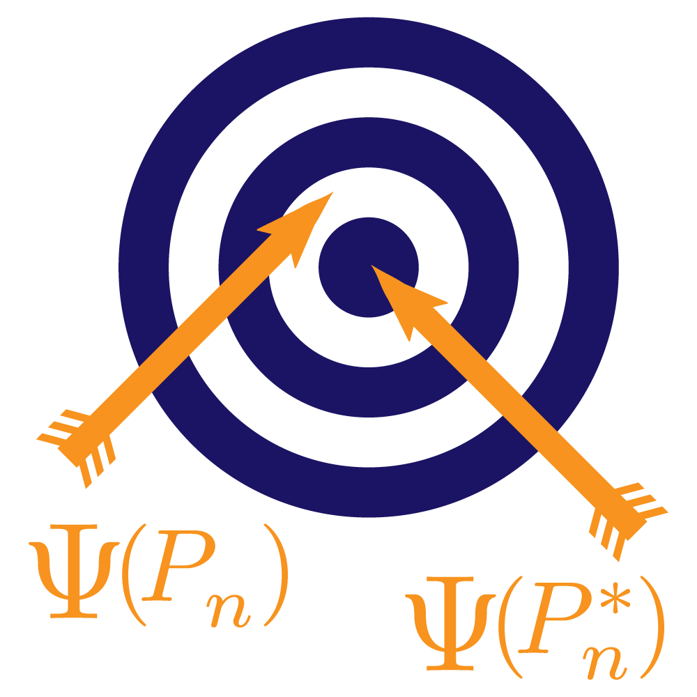
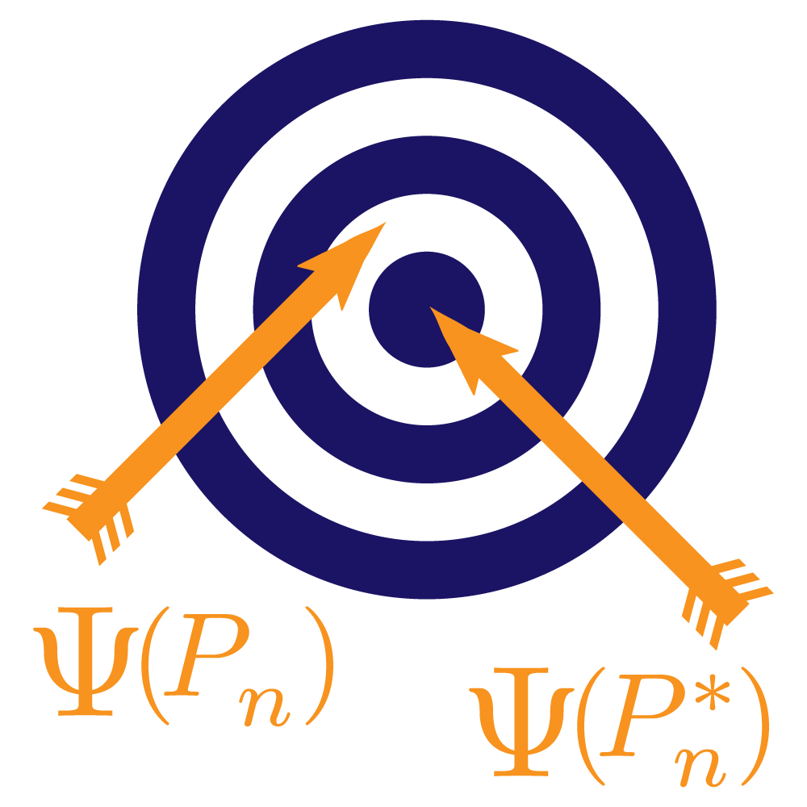

About this book
The Hitchhiker’s Guide to the tlverse, or a Targeted Learning Practitioner’s
Handbook is an open-source and fully-reproducible electronic handbook for
applying the targeted learning methodology in practice using the tlverse
software ecosystem. This work is currently in an
early draft phase and is available to facilitate input from the community. To
view or contribute to the available content, consider visiting the
GitHub repository for this site.
About the authors
Mark J. van der Laan
Mark van der Laan, PhD, is Professor of Biostatistics and Statistics at UC
Berkeley. His research interests include statistical methods in computational
biology, survival analysis, censored data, adaptive designs, targeted maximum
likelihood estimation, causal inference, data-adaptive loss-based learning, and
multiple testing. His research group developed loss-based super learning in
semiparametric models, based on cross-validation, as a generic optimal tool for
the estimation of infinite-dimensional parameters, such as nonparametric density
estimation and prediction with both censored and uncensored data. Building on
this work, his research group developed targeted maximum likelihood estimation
for a target parameter of the data-generating distribution in arbitrary
semiparametric and nonparametric models, as a generic optimal methodology for
statistical and causal inference. Most recently, Mark’s group has focused in
part on the development of a centralized, principled set of software tools for
targeted learning, the tlverse. For more information, see
https://vanderlaan-lab.org.
Alan E. Hubbard
Alan Hubbard is Professor of Biostatistics, former head of the Division of
Biostatistics at UC Berkeley, and head of data analytics core at UC Berkeley’s
SuperFund research program. His current research interests include causal
inference, variable importance analysis, statistical machine learning,
estimation of and inference for data-adaptive statistical target parameters, and
targeted minimum loss-based estimation. Research in his group is generally
motivated by applications to problems in computational biology, epidemiology,
and precision medicine.
Jeremy R. Coyle
Jeremy Coyle is a consulting data scientist and statistical programmer,
currently leading the software development effort that has produced the
tlverse ecosystem of R packages and related software tools. Jeremy earned his
Ph.D. in Biostatistics from UC Berkeley in 2016, primarily under the supervision
of Alan Hubbard.
Nima S. Hejazi
Nima is a Ph.D. candidate in biostatistics with a designated emphasis in
computational and genomic biology, working jointly with Mark van der Laan and
Alan Hubbard. Nima is affiliated with UC Berkeley’s Center for Computational
Biology and NIH Biomedical Big Data training program. His research interests
span causal inference, nonparametric inference and machine learning, targeted
loss-based estimation, survival analysis, statistical computing, reproducible
research, and high-dimensional biology. He is also passionate about software
development for applied statistics, including software design, automated
testing, and reproducible coding practices. For more information, see
https://nimahejazi.org.
Ivana Malenica
Ivana is a Ph.D. student in biostatistics advised by Mark van der Laan. Ivana is
currently a fellow at the Berkeley Institute for Data Science, after serving as
a NIH Biomedical Big Data and Freeport-McMoRan Genomic Engine fellow. She earned
her Master’s in Biostatistics and Bachelor’s in Mathematics, and spent some time
at the Translational Genomics Research Institute. Very broadly, her research
interests span non/semi-parametric theory, probability theory, machine learning,
causal inference and high-dimensional statistics. Most of her current work
involves complex dependent settings (dependence through time and network) and
adaptive sequential designs.
Rachael V. Phillips
Rachael is a Ph.D. student in biostatistics, advised by Alan Hubbard and Mark
van der Laan. She has an M.A. in Biostatistics, B.S. in Biology with a
Chemistry minor and a B.A. in Mathematics with a Spanish minor. Rachael is
motivated to solve real-world, high-dimensional problems in human health. Her
research interests span causal inference, machine learning, nonparametric
statistical estimation, and finite sample inference. She is also passionate
about online mediated education. Rachael is affiliated with UC Berkeley’s Center
for Computational Biology, NIH Biomedical Big Data Training Program, and
Superfund Research Program.
 
